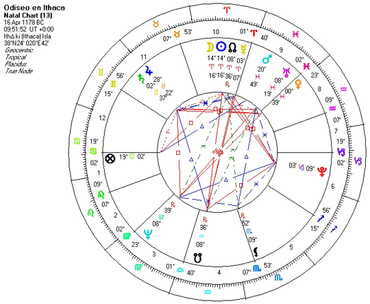

Case astrologice
 Semnificatiile caselor sunt urmatoarele:
CASA I
( sau Ascendentul ) indica aspectul fizic, personalitatea, caracterul si temperamentul, vitalitatea nativului, succesul sau insuccesul in viata. Ea este casa Eu-lui si se afla in corespondenta cu CASA VII, care este Casa asociatului sau partenerului ( indiferent daca este vorba de casatorie sau de o afacere ).CASA II
indica banii si bunurile dobandite prin munca, speculatii si investitii financiare, recompense de capatat. Mai este si Casa talentelor native cu care fiecare este inzestrat. Aceasta Casa este in corespondenta cu opusul sau, CASA VIII care indica banii si averea obtinuti din mosteniri sau alte castiguri asemanatoare.CASA III
este Casa comunicarii, patronand domeniul intelectual, mentalul concret si rational, micile studii ( pana la nivel de liceu ), micile calatorii ( pana la maximum 3 zile ), precum si relatia pe care o avem cu fratii si surorile. CASA IX este opusul ei si aceasta arata marile studii la nivel de facultate si a marilor descoperiri.CASA IV
este Casa Familiei, a caminului, dand relatia cu parintele de acelasi sex cu nativul. Tot aici gasim informatii asupra finalului vietii nativului. Casa X este in corespondenta cu ea si aceasta indica societatea si afirmarea in plan social.CASA V
este Casa creatiei, a bucuriilor si distractiilor, a relatiilor sentimentale ( inclusiv amanti ), Casa copiilor, a jocului si a speculatiilor, dar si Casa instinctelor dominante pe care le are nativul. CASA XI adica opusul ei, reprezinta prietenii si protectorii.CASA VI
este Casa sanatatii, aici aparand indicatii despre sensibilitatea unor organe si a unor mici boli , dar si Casa relatiei la locul de munca, relatiile cu colegii sau cu subalternii. Este in corespondenta cu ASA XII care indica marile boli, de natura cronica, care au consecinte karmice.CASA VII
este Casa partenerilor de afaceri sau de casatorie, a asociatilor dar si Casa dusmanilor declarati, pe fata.CASA VIII
este Casa mortii si renasterii, a spiritualitatii si ocultismului, a sexului, a mostenirilor, a relatiei cu legea dar si Casa accidentelor, a divortului si a proceselor.CASA IX
este Casa marilor studii, a marilor calatorii ( in strainatate ), Casa visului si a filozofiei, a religiei si a justitiei.CASA X
indica viata sociala, relatia cu parintele de sex opus, dar si posibilitatile de cadere din functii si pozitii privilegiate.CASA XI
reprezinta protectorii, prietenii popularitatea si sfatuitorii.CASA XII
este Casa probelor, a marilor boli, a dusmanilor ascunsi, a izolarii, patronand deceptiile, crizele psihice.O alta clasificare a Caselor, le pune in corelatie cu domeniul de viata pe care il patroneaza: Case personale ( I, V, IX ) , care reprezinta Eul, creatia si spiritualitatea, avand influenta asupra evolutiei fizice, psihice si mentale a nativului. Case materiale ( II, VI, X ), care reprezinta veniturile, profesia si realizarea sociala, indicand modul cum va evolua dezvoltarea nativului la nivel material si in relatiile cu societatea , dar axat pe avere si familie. Case sociale ( III, VII, XI ), reprezentand rudele, asociatii si prietenii si relatiile sociale cu persoanele apropiate nativului. Case spirituale ( IV, VIII, XII ), reprezentand ereditatea, ocultismul si sexul, credinta si lumea secreta, nevazuta, indicand relatia nativului cu fenomenele subtile si delicate ale evolutiei spirituale.